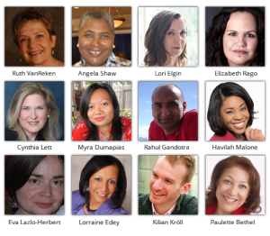

Articles >> November 2013
The Person Behind TCKid's Organizational Development: Dr. Paulette Bethel Interviews TCKid Executive Director Myra Dumapias for the Lost in Transition Global Telesummit

TCKid Executive Director Myra Dumapias, MSW was one of the experts interviewed by Dr. Paulette M. Bethel on October 23, 2013 for the Lost in Transition Global Telesummit.
Dr. Paulette M. Bethel has brought together 28 world class authors, entrepreneurs, mentors, visionaries, and global life experts from around the globe share their insights and offer solutions for the Lost in Transition Global Telesummit, running from Oct 22-26, Nov 11-14, and Dec 2-6. This Telesummit includes visionaries such as bestselling author of Third Culture Kids: The Experience of Growing Up Among Worlds, Ruth Van Reken, Academy Award Shortlisted Director, Rahul Gandotra, renowned Etiquette Maven and International Protocol Consultant, Cynthia Lett, Tina Quick, Jo Parfitt, Julia Simens, Joseph Tomeo, Donna Musil, Byron Rodgers, Dr. Michiyo Ambrosius, Gary Loper, Dr. Katrina Burris, and many more. Click here for the Lost in Transition Global Telesummit
The TCKid Executive Director accepted the torch of leadership from Founder Brice Royer in 2011 and has since been developing TCKid's organizational structure and sustainability to strengthen its impact on the world's understanding and appreciation of Third Culture Kids. Daughter of a second generation Foreign Service Diplomat and Third Culture Adult mother born with itchy feet, her developmental years are colored with memories of walking on water in an imperial garden in Beijing, eating freshly made Roti for breakfast on Sundays in Kuala Lumpur, observing the human spirit of Romanian gypsies and revolutionaries in Bucharest, and the smell of bakeries in Hamburg. She also lived in Korea, Philippines and Bahrain, where her son, also a TCK, spent part of his developmental years. As a Social Work professor, she integrates global awareness into cultural competency standards.
In the interview with Dr. Bethel, Ms. Dumapias shares her personal stories and advice as a TCK, insights from the Social Work field and her vision for TCKid. Please visit TCKid at TCKid.com
Click here to listen to Dr. Bethel's interview TCKid Executive Director Myra Dumapias, MSW - https://soundcloud.com/tckid_tv_radio/the-person-behind-tckids
Posted in Team, Third Culture Kids News, Uncategorized